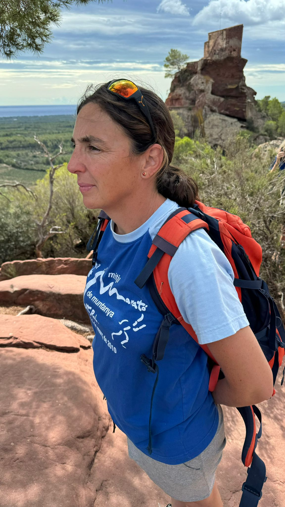
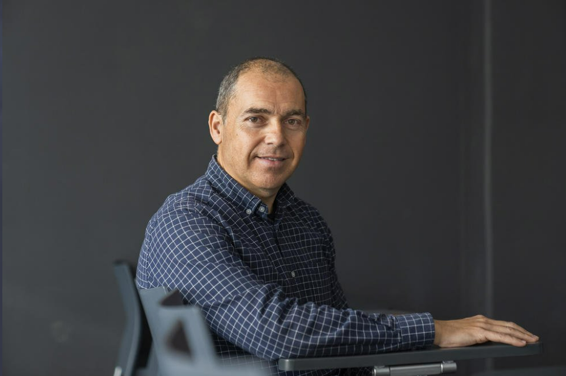

Equip
MARTA RICART VILELLA
Sóc llicenciada en biologia, especilitada en zoològia, i després d’algunes incursions al món de la zoologia a Estats Units i Finlàndia, la vida professional m’ha ensenyat la meva passió: el territori; l’espai que ens sustenta, que ens alimenta, que ens permet conviure, gaudir, créixer...
Amb més de 20 anys d’experiència laboral, m’he especialitzat en la tramitació ambiental del planejament urbanístic, realitzant els estudis complementaris ambientals, de mobilitat, de paisatge i agraris de plans d’ordenació urbanística, plans especials, projectes d’acutació urbanística, etc. Assessoro en les mesures i tràmits adients per a facilitar la tramitació amb les administracions pertinents, intentant ajudar, comprendre i facilitar els tràmits i les gestions per a què els projectes puguin ser una realitat.
Fruit de la implicació en totes les fases dels projectes, també realitzo estudis d’impacte ambiental, disseny de mesures ambientals i paisatgístiques, així com el seguiment, la vigilància i el control de les mesures ambientals al llarg de tot el procés de planificació i construcció.
TXIQUI LÓPEZ CAMPOS
Sóc Tècnic Superior en Medi Ambient, amb una experiència professional en el camp del Medi Ambient de més de 30 anys, m’he especialitzat en el coneixement de fauna i flora, realitzant la meva feina en diferents àmbits de treball educatius, divulgatius i tècnics.
En el camp de la divulgació, he treballat com a localitzador d’espècies de fauna i flora d’espais d’interès natural per a la produccció de documentals, participant en programes televisius i de ràdio i he dirigit i treballat en diferents empreses i programes d’educació ambiental. També m’he especilitzat en el disseny d’itinteraris d’interpretació de la natura i el dibuix ceintífic, com a eina de divulgació, i he sigut autor de diversos llibres i contes infantils de divulgació ambiental de l’àrea de Tarrragona.
De manera autònoma he treballat durant 20 anys en estudis de camp sobre biodiversitat en espais naturals i espais urbans per a diferents administracions, així com en la caracterització d’espais naturals i controls de fauna i flora.
Col·laboradors

Txell Omella Aznar
Llicenciada en Biologia
Sóc llicenciada en Biologia però la meva passió de posar en valor el patrimoni natural i cultural del nostre territori em va portar a fundar, l’any 2006, El Brogit una empresa de guiatge i una agència de viatges centrada en l'ecoturisme i l'enoturisme, especialment a les muntanyes del sud de Catalunya.
Amb una experiència consolidada en la consultoria turística i ambiental, m'he especialitzat en l'estructuració i recuperació de xarxes de camins, la seva senyalització, l'ús avançat de Sistemes d'Informació Geogràfica (SIG) per a la gestió territorial i l'anàlisi ambiental i en la creació d'experiències turístiques i educatives. També col·laboro amb altres empreses en projectes europeus de tipologia diversa segons la meva expertesa.
Recentment, la meva faceta més innovadora m’ha portat a crear Ludi Artis, on aplico la gamificació i l'aprenentatge basat en jocs per transformar la manera com descobrim i aprenem sobre el nostre entorn.

Joaquim Roset Piñol
Enginyer geòleg
Sóc enginyer geòleg amb més de 20 anys d’experiència professional en el camp de la Geotècnia, Hidrogeologia, Geofísica i Riscos Geològics. Combino la meva feina de consultor a través de l’empresa GEOSUD amb la docència a l’Escola Tècnica Superior d’Arquitectura de la Universitat Rovira i Virgili i des del curs 2008/2009.
A la vegada, m’agrada la feina de divulgació geològica, hidrogeologia i sobre riscs geològics en col·laboració amb centres educatius de secundaria, així com amb excursions guiades i itineraris de senderisme.

Pauline Solviche
Arquitecta paisatgista
Sóc Arquitecta paisatgista per l’École Nationale Supérieure d’Architecture et de Paysage de Bordeaux (2001) i tinc experiència destacada de fa 24 anys en diagnosi i estudis paisatgístics, urbanisme i planejament, en especial en el sòl no urbanitzable i espais naturals protegits i entorns patrimonials en municipis rurals i periurbans.
Dins dels meus camps de treball s’hi inclou també la redacció i col·laboració en projectes d’urbanització per espais lliures i espais públics en nuclis urbans i en espais periurbans i també naturalitzats, així com la rehabilitació paisatgística de nuclis rurals, masies i construccions rurals.
També col·laboro en la redacció de programes per als fons europeus de desenvolupament rural i Plans Únics d’Obres i Serveis de Catalunya. M’agrada fixar-me en els detalls i entendre les dinàmiques d’allò que observo el que em fa gaudir especialment la redacció de catàlegs, inventaris, i estudis paisatgístics de diferents escales.